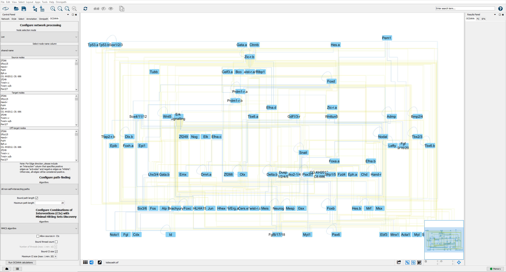

Computing Optimal Combinations of Intervention with OCSANA¶
OCSANA (Optimal Combinations of Interventions from Network Analysis), originally introduced in (Vera-Licona et al., 2013), identifies and prioritizes optimal minimal combinations of interventions (CIs) that disrupt the elementary paths from selected source nodes to the specified target nodes. When indicated by the user, OCSANA seeks to additionally minimize the side-effects that CIs can cause on specified off-target nodes.
Running OCSANA in Cytoscape¶
After installation of OCSANA+ and loading of a network, the OCSANA configuration menu will appear as a tab in the Cytoscape Control Panel (right panel).
Configuring your OCSANA Run¶
Configure Network Processing¶
Node Selection Mode¶
Select whether the user will enter a string of source, target, and off target nodes, or will click-select the nodes.
Select Node Name Column¶
This option allows users to select which column of the node attribute table will be used to identify network nodes.
Source Nodes¶
The Source nodes section allows the user to specify the source nodes (i.e. the nodes from which the signals’ cascades will start). The nodes can be selected manually from the list of nodes appearing in this section or by copying and pasting the list of desired nodes in the dialog window after clicking on the set source nodes button.
Target Nodes¶
The Target nodessection allows the user to select the target nodes (i.e. the nodes intended to be blocked). The nodes can be selected manually from the list of nodes appearing in this section or by copying and pasting a list of nodes in the dialog window after clicking on the set of target nodes button.
Off-target Nodes¶
The off-target nodes section is an optional column for the user that allows to select offtarget (side-effect) nodes, that is, nodes that are preferred to be avoided when constructing CIs. A CI that contains a node from such given list, will then receive a penalty. The nodes can be selected manually from the list of nodes appearing in this column or by copying and pasting the list of nodes in the dialog window after clicking on the set side-effects nodes button.
Configuring Edge Sign¶
To Configure edge signs, please include an “interaction” column that specifies positive edges as “activates” and negative edges as “inhibits.” Otherwise, all edges will be considered positive.
Configure Path Finding¶
Shortest Paths¶
searches for the paths with the shortest length among all the elementary paths connecting source nodes to target nodes and source nodes to side-effect nodes (via Dijkstra’s algorithm).
All Non-Self-intersecting paths¶
considers all the paths, between specified nodes, that do not contain loops (self-intersections).
Configure Combinations of Interventions (CIs) with Minimal Hitting Sets Discovery¶
MMCS algorithm¶
RS algorithm¶
Berge’s algorithm¶
is based on the algorithm proposed in [Haus et al., 2008], a special encoding of Berge’s algorithm [Berge, 1989]. The Exact Solution computes all minimal CIs of all sizes and it is also adapted to compute all CIs up to a specified size